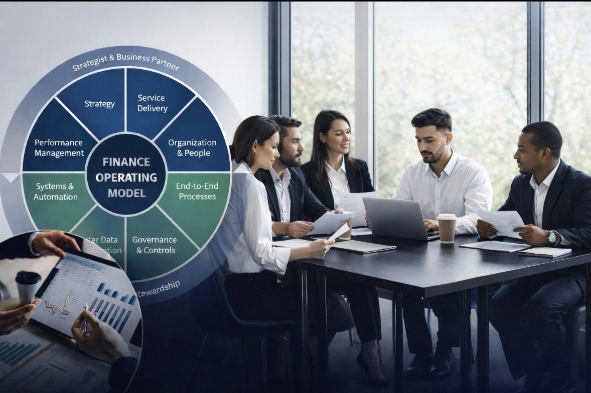
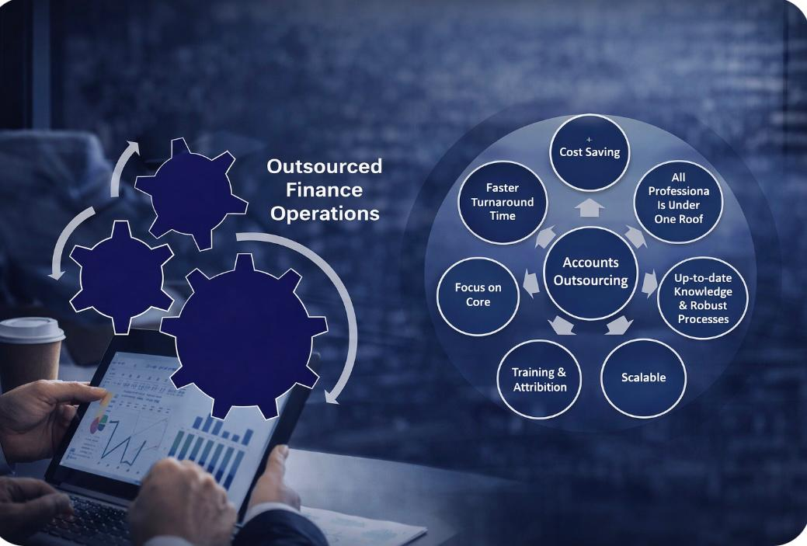

We work with business owners and leadership teams to fix financial issues, improve performance, and bring structure to how the business is run.
Most businesses do not fail because of lack of effort — they struggle because:
That is where we come in.
We support you across the key financial areas that directly impact your business:
We do not just advise — we get involved.
Our approach is practical, hands-on, and focused on execution:
Our work is professional, discreet, disciplined and focused on results.
If your business is under pressure — losses, cash flow issues, or bank challenges — we help you stabilise and regain control.
If your business is growing but lacks senior financial leadership, we provide ongoing CFO support without the cost of a full-time hire.
If your finance function needs structure, reliability, and control, we provide managed finance support with proper oversight.
SummitsBridge Consulting is led by Saliya Jayaweera, a former Partner of a Big 4 accounting firm and a senior finance leader with over 30 years of experience.
His experience spans banking, corporate leadership, restructuring, and advisory — combining strong financial discipline with practical business understanding.
Professional. Discreet. Disciplined.
Businesses facing sustained losses, tightening liquidity, or increasing bank pressure require calm, experienced financial intervention. Often, owners are working harder than ever — yet profitability declines and cash flow visibility weakens.
SummitsBridge Consulting provides structured financial stabilisation and turnaround advisory services for SMEs and owner-managed businesses navigating operational and financial strain.
We work alongside owners, boards, and lenders to:
Early intervention significantly improves recovery outcomes.
Each engagement is partner-led and supported by qualified finance professionals — ensuring both senior oversight and analytical depth throughout the recovery process.
The objective is clear: stabilise liquidity, restore financial discipline, and return the business to controlled, sustainable growth.
Engaged during a period of sustained monthly losses and acute liquidity pressure.
Cash flow was stabilised, banking facilities restructured, product economics realigned, and working capital discipline restored — returning the business to controlled performance footing.
Developed a structured multi-year recovery plan, supported lender negotiations, re-established governance discipline, and aligned production capacity to realistic demand levels.
Profitability was restored within 15 months with materially reduced financial risk exposure.
Identified weak product profitability visibility and fragmented systems oversight.
Implemented cost realignment, performance metrics, and disciplined capital oversight — restoring accountability and stabilising financial performance.
Appointed Group CFO to stabilise and prepare a multi-industry conglomerate for divestment following governance breakdown.
Rebuilt financial reporting, restored loss-making entities, institutionalised controls, and supported successful transaction completion.
Stabilisation requires clarity, discipline, and experienced leadership.
As businesses grow, financial complexity increases — but appointing a full-time CFO is not always practical. SummitsBridge Consulting provides fractional CFO services delivering senior-level financial leadership without permanent executive overhead.
We provide disciplined oversight aligned with regional commercial realities and long-term strategic direction.
Fractional CFO engagement strengthens decision-making clarity, improves risk visibility, and enhances financial control during growth or transition.
Institutional standards combined with practical commercial execution.
Businesses increasingly require outsourced finance solutions that deliver more than transactional processing. SummitsBridge Consulting provides governance-led outsourced finance and accounting services designed to strengthen reporting reliability, financial control, and operational discipline.
Our model combines senior oversight with a Sri Lanka-based team of fully qualified Chartered Accountants — ensuring technical competence and dependable execution.
Outsourcing should enhance financial oversight — not weaken it.
Our framework includes:
Each engagement is partner-led, ensuring accountability and continuity.
The focus is not merely processing — but building dependable financial infrastructure that supports informed decision-making.
SummitsBridge Consulting was founded by a senior finance professional with more than three decades of experience across international banking, corporate finance leadership, board governance, and restructuring advisory.
Following over 20 years in commercial and banking leadership roles across Sri Lanka and the Middle East, he was appointed as a Partner within a Big 4 accounting firm — combining institutional advisory standards with practical commercial execution.
The firm supports businesses in three primary areas:
Each engagement is tailored to the size, complexity, and commercial realities of the business.
Financial strain is rarely sudden.
It builds quietly — through margin erosion, liquidity gaps, cost escalation, and delayed corrective action.
By the time pressure becomes visible, leadership teams are often reacting rather than directing.
Many business owners sense the warning signs — but operational demands leave little room to redesign the financial foundation.
SummitsBridge Consulting was founded on the belief that disciplined financial architecture, early diagnostics, and experienced executive guidance can restore stability before instability becomes crisis.
We exist to embed clarity, control, and senior financial leadership at pivotal moments — whether during performance pressure, restructuring, or growth.
Most business owners recognise financial pressure when it arrives — but the critical window for intervention is often far earlier.
Read →
CFO AdvisoryAs revenue grows, financial complexity often outpaces the organisation’s ability to manage it effectively.
Read →Strong financial governance is not reserved for large corporates. Owner-managed businesses that invest in the right controls early enjoy significantly better outcomes.
Read →
Outsourced FinanceNot all outsourcing models are equal. Governance-led outsourcing produces materially better results than transactional models.
Read →Negotiating with lenders during financial stress is as much a disciplined process as it is a relationship exercise.
Read →Many businesses focus on profitability while underestimating the importance of real-time cash flow visibility.
Read →Most business owners recognise financial pressure when it arrives — but the critical window for intervention is often far earlier.
Read →As revenue grows, financial complexity often outpaces the organisation’s ability to manage it effectively.
Read →Strong financial governance is not reserved for large corporates. Owner-managed businesses that invest in the right controls early enjoy significantly better outcomes.
Read →Not all outsourcing models are equal. Governance-led outsourcing produces materially better results than transactional models.
Read →Negotiating with lenders during financial stress is as much a disciplined process as it is a relationship exercise.
Read →Many businesses focus on profitability while underestimating the importance of real-time cash flow visibility.
Read →We welcome confidential enquiries from business owners, boards, and executives. All discussions are treated with complete discretion.
All enquiries are treated with complete confidentiality.